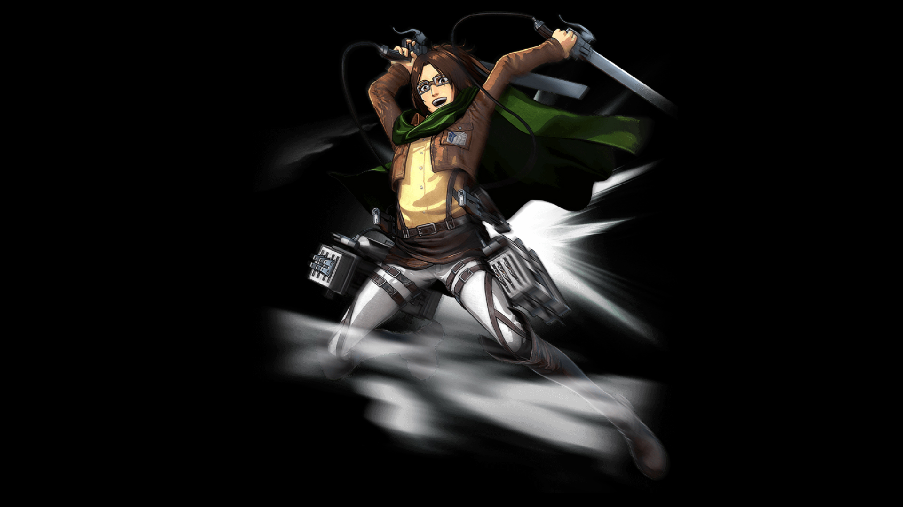
Ханджи Зоэ
Командир разведотряда, известный страстью к научным исследованиям титанов и готовностью рисковать ради получения новых знаний.

Командир разведотряда, известный страстью к научным исследованиям титанов и готовностью рисковать ради получения новых знаний.
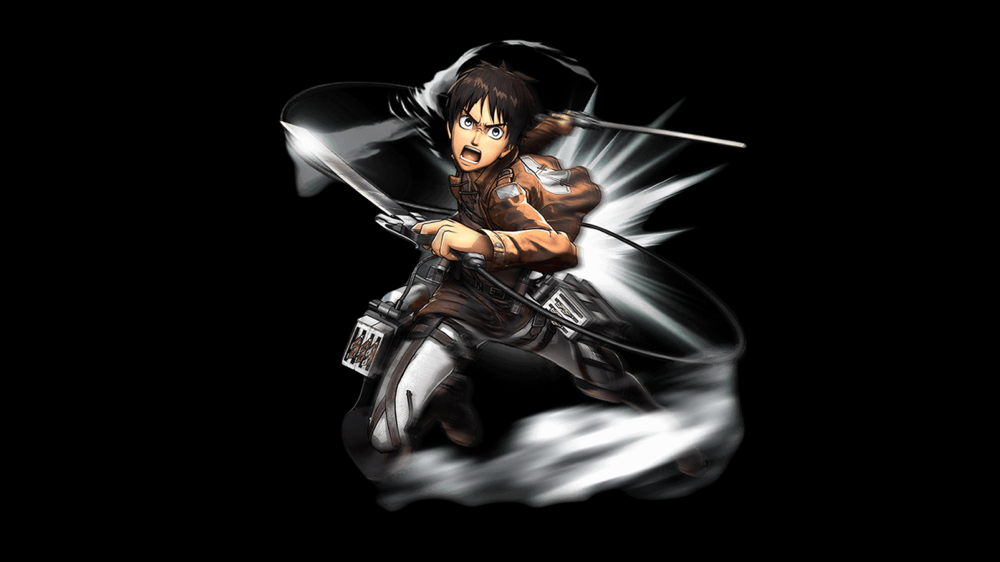
Юноша, обладающий способностью превращаться в титана, движимый жаждой уничтожения всех титанов и открытием правды об их происхождении.
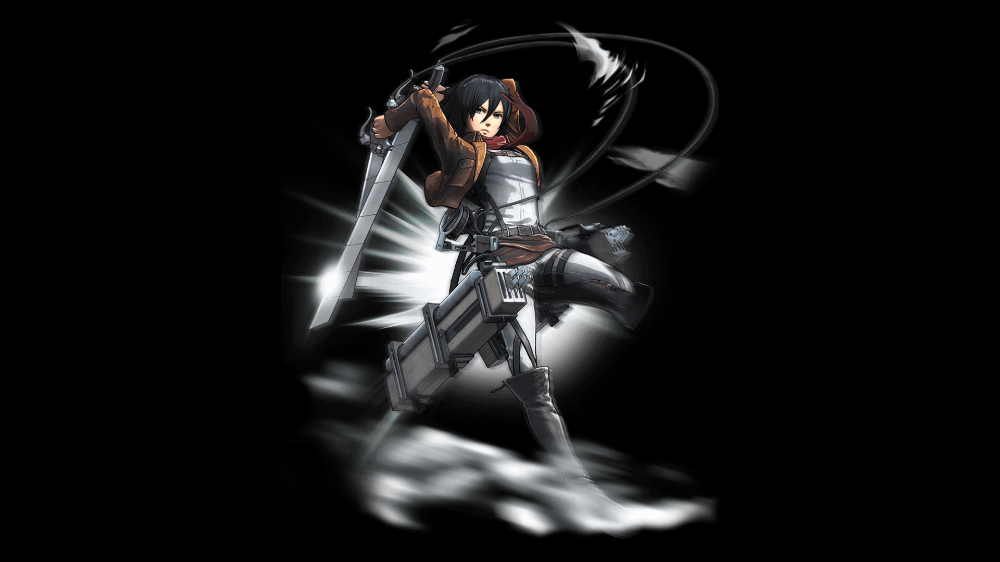
Приёмная сестра Эрена, обладающая выдающимися боевыми навыками и безграничной преданностью к нему.
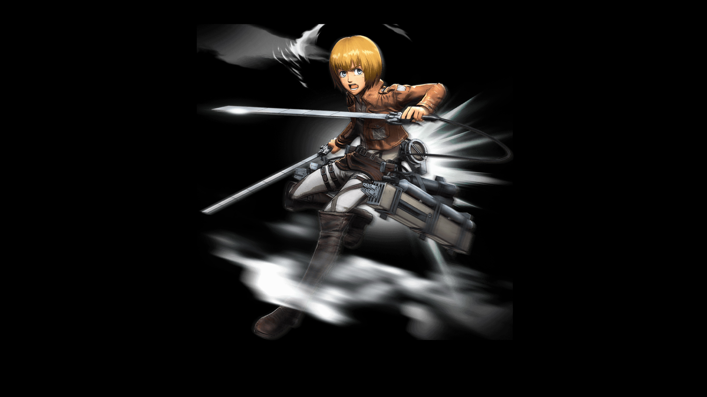
Лучший друг Эрена и Микасы, обладающий высоким интеллектом и стратегическим мышлением, играющий ключевую роль в принятии решений.
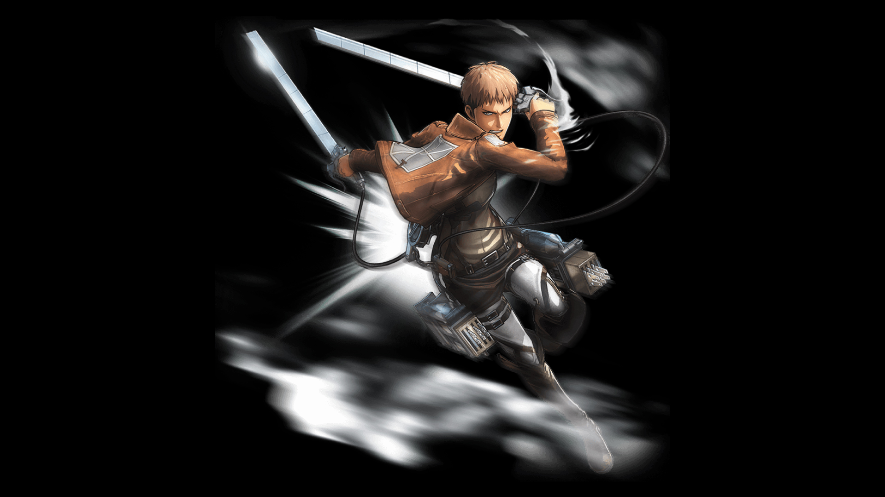
Сокурсник Эрена, изначально недолюбливающий его, но позднее становящийся одним из доверенных членов разведотряда.
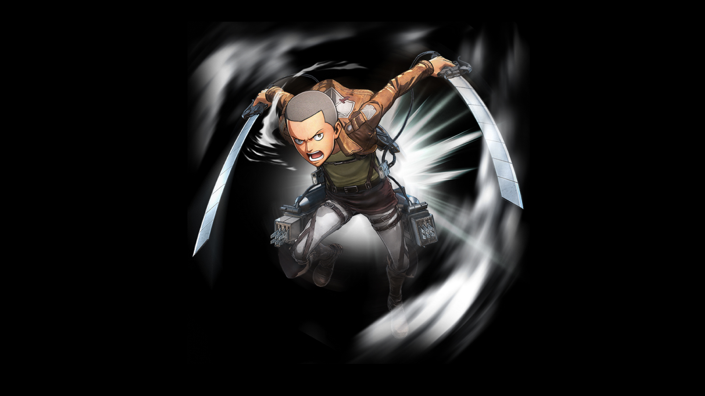
Решительный и напористый солдат, чья храбрость и самоотверженность неоднократно помогают его товарищам.
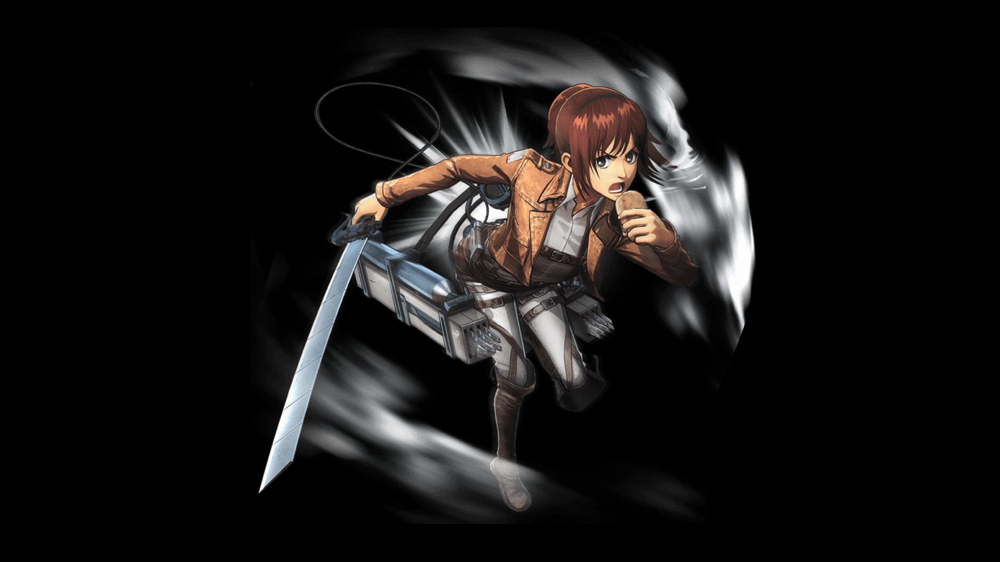
Спонтанная и ненасытная девушка, обладающая выдающимися навыками стрельбы и поиска провианта.
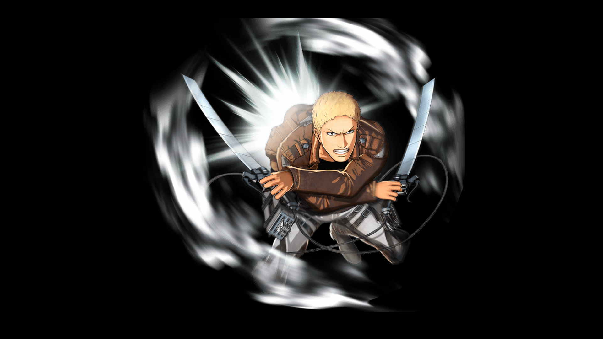
Солдат, скрывающий свою истинную сущность титана-воина, которая постепенно открывается в ходе повествования.
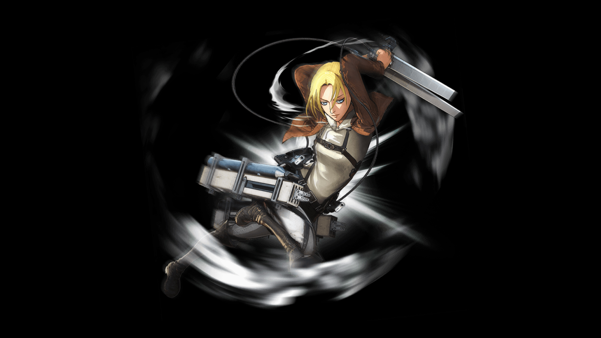
Талантливый боец, оказывающаяся титаном-воином и ведущая сложную двойную игру.
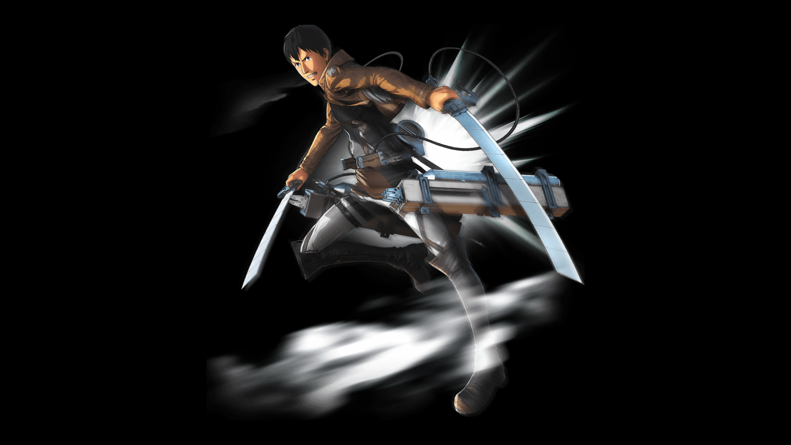
Спокойный и рассудительный солдат, также являющийся титаном-воином наряду с Райнером и Энни.
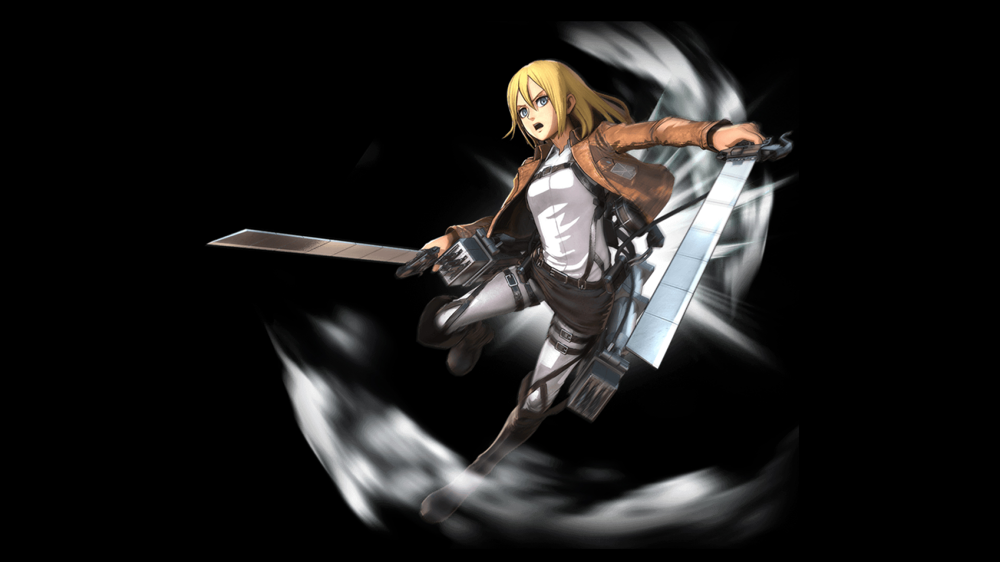
Скромная девушка, чья истинная сущность — законная королева — постепенно раскрывается на протяжении истории.
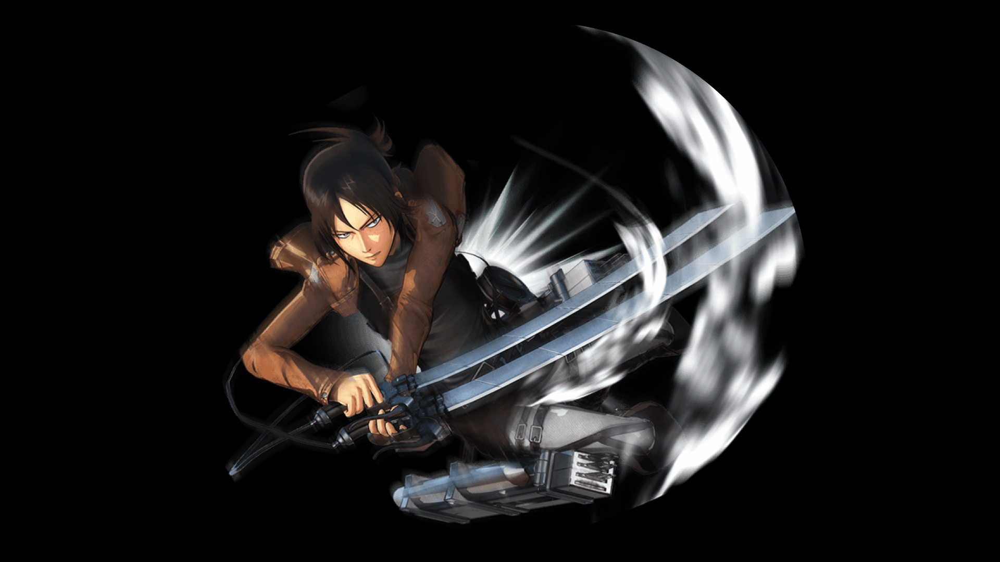
Таинственная и своенравная девушка, обладающая способностью превращаться в титана и играющая ключевую роль в конфликте.
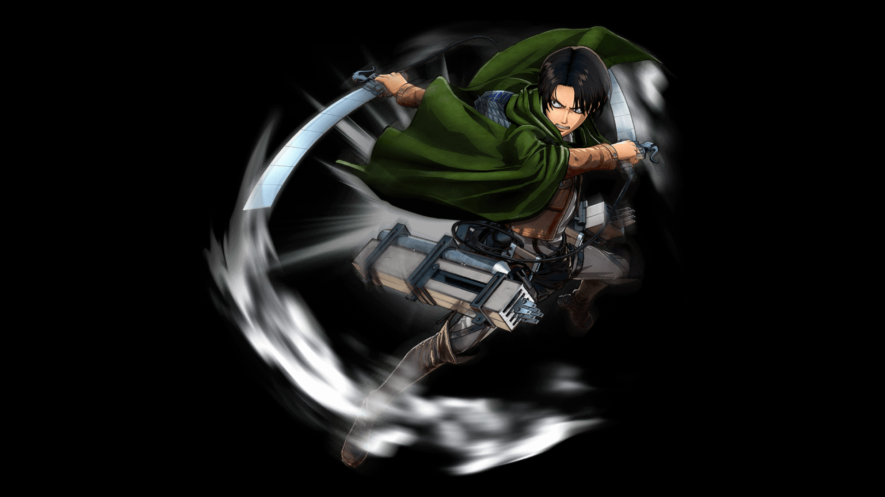
Капитан элитного подразделения разведотряда, известный выдающимися боевыми навыками и строгой дисциплиной.
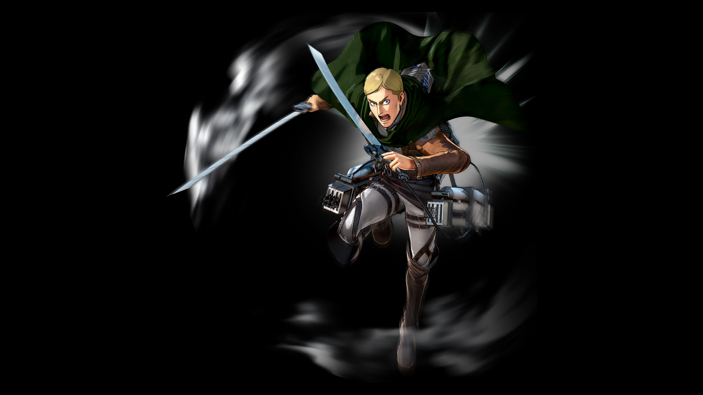
Командующий Разведывательного корпуса, выдающийся стратег, ведущий отряд к раскрытию тайн мира титанов.